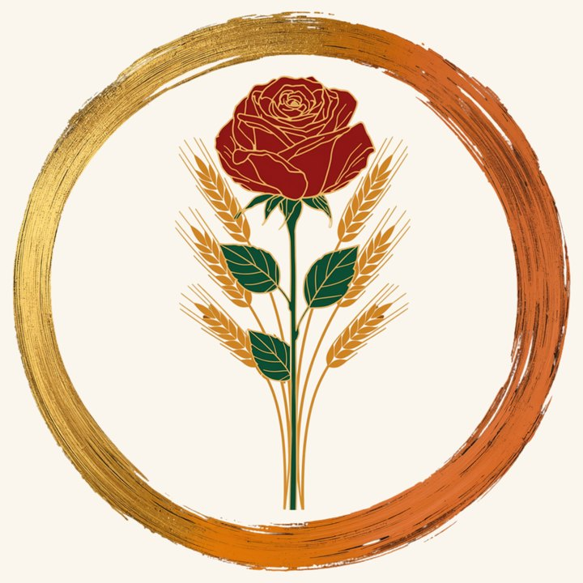
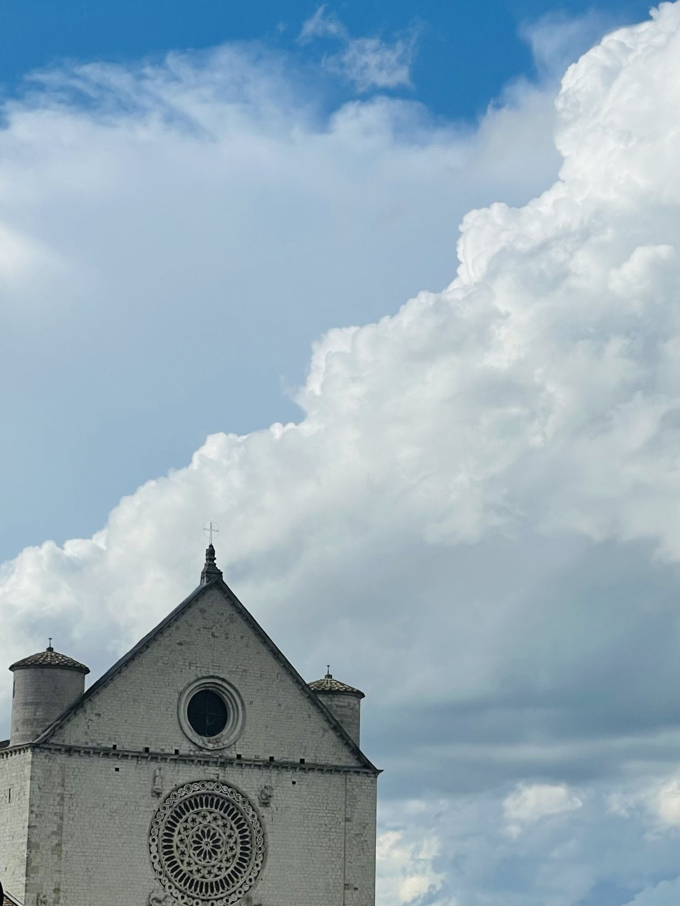
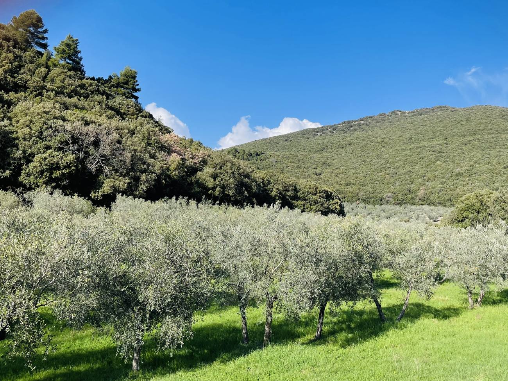
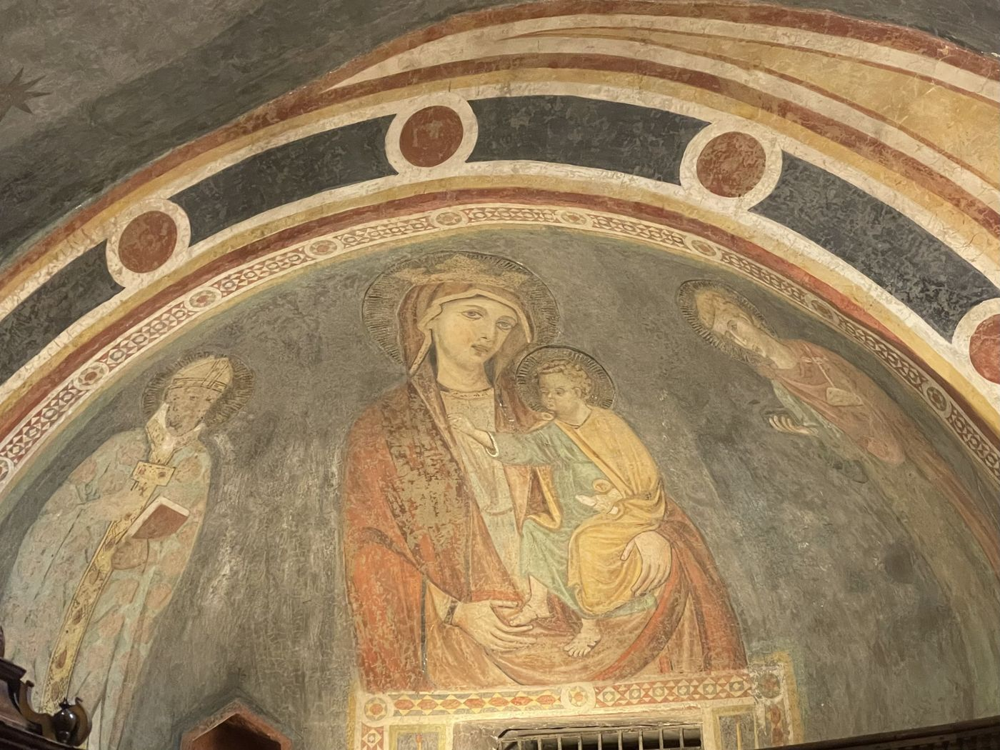

La Fondazione La Rosa d'Oro è un ente non profit riconosciuto dal Registro unico nazionale del Terzo settore, con sede a Milano, costituito il 26 febbraio 2026. Ciò che ci caratterizza è:
- l'attenzione alle esigenze della persona, del territorio e del terreno agricolo, insieme all'ascolto profondo della persona e dei gruppi di persone, e la sensibilità;
- la capacità di mediazione: facilitare il dialogo e risolvere i conflitti in ambito familiare e comunitario. Ciò avviene di pari passo con il networking, l'abilità relazionale e strategica di stabilire, sviluppare e mantenere relazioni a lungo termine con persone, aziende, istituzioni pubbliche e private, e di creare reti di comunità, grazie a cui si favorisce la sussidiarietà orizzontale. In particolare, la cooperazione a livello internazionale ci permette di ottenere risultati più forti;
- l'operosità e la concretezza: far vivere nella pratica un progetto, un ideale, con impegno concreto, attivo e instancabile;
- la responsabilità: rendersi protagonisti di piccoli grandi cambiamenti per il pianeta Terra;
- il coraggio di operare per il bene comune, con spirito civico, altruistico e solidale, attraverso interventi e servizi sociali, agricoli, paesaggistici e sociosanitari;
- lo spirito di innovazione e di ricerca: sostenere il progresso scientifico, artistico o sociale per creare un impatto positivo e nutrire l'anima;
- la trasparenza: la gestione etica e rendicontabile del patrimonio, la coerenza tra gli scopi dichiarati e le azioni.
Coltiviamo la terra, accogliamo la vita, custodiamo il cammino fino alla fine.
Fede, Amore e Speranza
La Fondazione non ha scopo di lucro e persegue finalità civiche, solidaristiche e di utilità sociale, con attività in ambito sociale e sociosanitario. Ha carattere operativo, in quanto promuove, crea e gestisce progetti offrendo beni e servizi in prima persona, ed erogativo, in quanto fornisce consulenze e risorse, materiali o immateriali, a terzi.
Cosa offriamo
Assistenza alle persone
L'accompagnamento medico-assistenziale e spirituale nel fine vita: il nostro impegno va oltre le cure mediche e assistenziali, e offre un accompagnamento che tocca anche la sfera spirituale, garantendo dignità, sollievo e calore umano in ogni fase della vita, fino agli istanti più delicati.
L'assistenza a persone fragili: anziani, persone con patologie croniche, con dipendenze, minori in difficoltà, persone con disturbi dello spettro autistico, con grave disabilità, con patologie neurologiche e neuropsichiatriche.
L'uso delle risorse agricole per migliorare le condizioni di salute e la qualità della vita — di bambini con patologie oncologiche, di giovani a rischio di esclusione sociale — perché il contatto con la terra aiuta a ritrovare una dimensione individuale e sociale e una propria identità produttiva: i ragazzi sono coinvolti nell'intera filiera e accompagnati verso la vita adulta e l'indipendenza economica. E l'agricoltura sociale: attività agricole produttive, biologiche, biodinamiche e rigenerative, per la tutela del paesaggio, della biodiversità e del suolo, che garantisce alimenti sani come strumento di prevenzione.
Proteggiamo e custodiamo la Terra, perché un ambiente sano e un cibo sano significano una vita migliore per tutti.
La promozione e la tutela dei diritti umani, civili, sociali e politici, dei diritti dei consumatori e degli utenti delle attività di interesse generale, delle pari opportunità e delle iniziative di aiuto reciproco. La beneficenza, il sostegno a distanza, la cessione gratuita di alimenti o prodotti, l'erogazione di denaro, beni o servizi a sostegno di persone svantaggiate o di attività di interesse generale.
Assistenza alla natura
Interventi e servizi per la salvaguardia e il miglioramento dell'ambiente e per l'uso accorto e razionale delle risorse naturali: bonifiche, ripristino idrogeologico, riforestazione, rinaturalizzazione; la creazione di aree verdi e parchi per la tutela della biodiversità.
La tutela e la valorizzazione del patrimonio culturale e paesaggistico; la riqualificazione di beni pubblici inutilizzati e di antiche ville abbandonate.
Formazione e divulgazione
La formazione per gli operatori del fine vita e per gli agricoltori; la formazione universitaria, post-universitaria e professionale; la formazione e l'aggiornamento continuo di personale sanitario, medico e di operatori delle discipline terapeutiche e del benessere, in particolare in ambito fitoterapico.
Attività culturali di interesse sociale con finalità educativa; la formazione extra-scolastica, per prevenire la dispersione scolastica e il bullismo e contrastare la povertà educativa. Percorsi educativi e formativi strutturati — corsi pluriennali, master, scuole di specializzazione, seminari, workshop e convegni — negli ambiti medico-terapeutico, socio-assistenziale, dell'educazione alimentare, dell'agricoltura e dell'agricoltura sociale, della rigenerazione territoriale.
Laboratori produttivi, artigianali e agricoli, residenziali e non, in cui il lavoro manuale e la realizzazione di manufatti sono strumento terapeutico e pedagogico. Attività culturali, artistiche e ricreative di interesse sociale.
Ricerca e promozione del futuro
Ricerche sulle potenzialità di nuove piante medicinali e sull'effetto di nuove modalità di cura, per esempio in ambienti naturali e nel paesaggio; la valutazione del valore dell'assistenza medica con un approccio su corpo, mente e spirito, anche con pratiche artistiche o olistiche; la valutazione dell'impatto sociale degli interventi di riqualificazione.
Incubare, sostenere e promuovere progetti di altre realtà con una visione comune, con l'erogazione di beni e servizi. Sosteniamo in particolare il talento e la determinazione dei giovani: borse di studio e laboratori per le idee della prossima generazione, per aiutare a costruire i leader e i ricercatori del futuro.
Scopri i progetti che stiamo finanziando, e come puoi fare la tua parte
La nostra storia

Tutto nasce ad Assisi, durante la festa di Michele, nel settembre del 2025. Si trovano lì un agricoltore, consulente bioforestale, e un medico, a parlare delle gioie e delle difficoltà nei reciproci campi. Osservano come sia la medicina sia l'agricoltura si trovino in uno spazio di transizione, in cui tanto deve essere fatto perché le due discipline lavorino davvero a favore dell'umano e per l'umano. Nello stesso tempo, dalle necessità portate dalle persone con cui entrambi hanno a che fare, arriva la domanda di aiuto: creare un ponte tra passato e futuro, facilitare la nascita di progetti e tutte quelle situazioni legate al lutto e alla successione, spesso complicate sul piano pratico e poco in linea con i desideri di chi non c'è più. Mentre camminano dalla basilica di San Francesco verso la Porziuncola, tra gli ulivi, il progetto sottilmente si crea.


Dopo profonde meditazioni durante le Notti Sante e valutazioni attente, i due lavorano alla creazione di una Fondazione, il cui statuto viene partorito il 7 gennaio 2026. Il 26 febbraio 2026 la Fondazione La Rosa d'Oro prende forma reale.
I fondatori
Dr.ssa Dacia Dalla Libera, presidente. Medico chirurgo, neurologa ed esperta di medicina integrata (ayurveda, antroposofia); quietude practitioner, una figura di supporto spirituale e nel fine vita che offre cura emotiva e spirituale a chi affronta la morte, il fine vita e il lutto; formatrice.
Elias Minotti, vicepresidente. Agricoltore, tecnico, formatore e consulente negli ambiti agricolo, agroalimentare e forestale, della gestione ambientale, paesaggistica e del verde in genere.
Per conoscere il nostro statuto: la pagina Documenti.
Ammirare il Bello, Custodire il Vero, Venerare il Nobile, Decidere il Bene.
La Fondazione in breve
- Denominazione
- Fondazione La Rosa d'Oro ETS
- Sede
- Via Bianca di Savoia 17, 20122 Milano
- Codice fiscale
- 14629350969
- Iscrizione
- RUNTS sez. g, rep. n. 170120
- Costituzione
- 26 febbraio 2026, rep. 8190 / racc. 4764, Notaio F. Franco
- Presidente
- Dr.ssa Dacia Dalla Libera
- Vicepresidente
- Elias Minotti
- Statuto
- Nella pagina Documenti